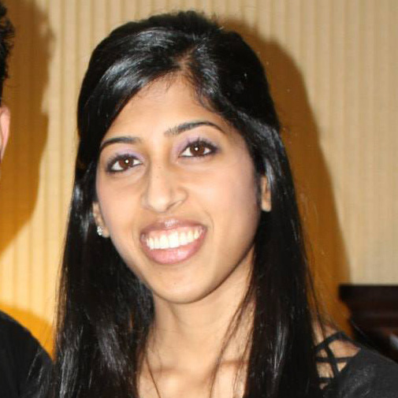
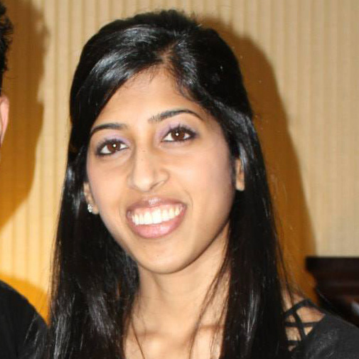

Jain Networking Forum
Jain Networking Forum (JNF) 2014 is designed for Jains between the ages of 21-29 and has the goal of fostering professional and relationship development. JNF 2014 will provide attendees the opportunity to meet similar minded individuals through interactive daytime sessions, while creating lasting connections with Jains that are successful in a variety of careers. Additionally, our unique social events will allow attendees to relax, mingle, and have an unforgettable experience this July.
JNF Keynote Speaker
Masum Momaya
JNF Keynote Speaker
Dr. Masum Momaya has been working for social change and social justice for more than twenty years, since her teens. She draws upon the Jain principles of ahimsa, anekantvaad and aparigraha daily. Currently a Curator at the Smithsonian Museums, her most recent exhibition “Beyond Bollywood: Indian Americans Shape the Nation” is showing there until March 2015 and will travel around the country for 5 years afterwards.
Formerly, Dr. Momaya has done curatorial work at the International Museum of Women in San Francisco and the Indo-American Heritage Museum in Chicago. She has also served as lead researcher and writer for the Association for Women’s Rights in Development and on the boards of the Third Wave Foundation, Amnesty International’s Women’s Human Rights Program and the Women’s Intercultural Network. Her more than 100 articles, podcasts and exhibitions have been translated into a dozen languages.
Dr. Momaya earned an honors BA in Public Policy and Feminist Studies from Stanford University and a masters degree in Education and a doctorate in Human Development from Harvard University. She is a graduate of the Coro Fellowship in Public Affairs in San Francisco and has conducted research at the Centre for Development Studies at Oxford University. In her spare time, she bakes vegan sweets, watches tennis and enjoys spending time with family and friends. Learn more about her here.
JNF Daytime Sessions
JNF is proud to announce some unique and interactive sessions for this years convention. We've arranged sessions to peak your interest in many different topics ranging from interfaith and Jain education to various career panels and how to become a leader in your community.
In addition, JNF is pleased to announce an off site visit for selected attendees to the Smithsonian National Museum of Natural History, for a personal tour with our keynote speaker Masum Momaya, to view her recent exhibition “Beyond Bollywood: Indian Americans Shape the Nation.” The exhibition explores the heritage, daily experience and numerous, diverse contributions that Indian immigrants and Indian Americans have made to shaping the United States. Only youth who have registered for this session will be allowed to attend, though we encourage all attendees to check out the exhibit either before or after the convention.
Evening Socials
Picnic in the District
After you've garba'd until you can't feel your feet anymore, join us for a casual mixer after hours where you can relax and get to know your fellow JNF attendees.
Paris Nights, Paris Lights
Exclusively for JNF attendees, you’ll be transported to the streets of Paris, where you can explore the shops and cafes, and dance the night away. Nous vous y voir!
Old Skool Pajama Party
After you enjoy the “Starry Night Gala” come spend your last evening with your new JNF friends at the Old Skool Pajama Party. We’ll have snacks and plenty of games!
 

JNF Committee
Your 2014 JNF Committee Co-Leads are Mayha Parikh (NY) and Krupa Shah (NY).
Working with them are Arpit Doshi (MD), Pooja Nagda (MA), Ruchita Parikh (TX), and Tejas Kataria (NY).
Have a question? Please contact jnf@yja.org. See you in July!